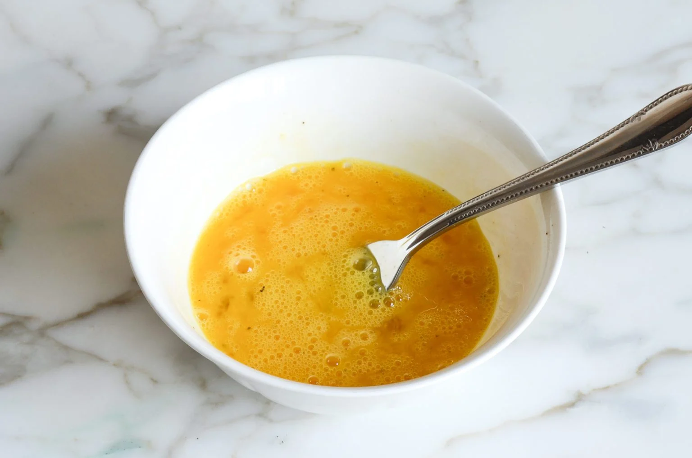

Step 1: Prepare the Eggs
In a medium bowl, combine the eggs with water, a generous pinch of salt, and a few grinds of pepper. Using a fork, beat until well combined.
Step 2: Heat the Pan
In a small nonstick skillet over medium-low heat, melt the butter and swirl to coat the whole surface of the pan.
Step 3: Cook the Eggs
Add the eggs to the pan and let cook, undisturbed, until they start to set around the edges. Then, use a rubber spatula to move the cooked egg away from the edges, letting the raw egg run to the outside of the pan.
Step 4: Add Fillings
Once the eggs are about 75% set, sprinkle cheese and herbs all over. Let cook until the cheese is mostly melted.
Step 5: Fold and Serve
Using the spatula, fold the omelette in half or into thirds. Slide it onto a plate and serve immediately.